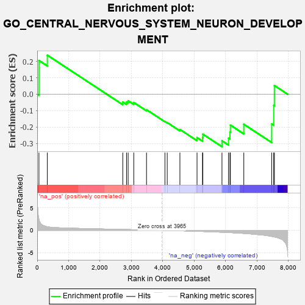
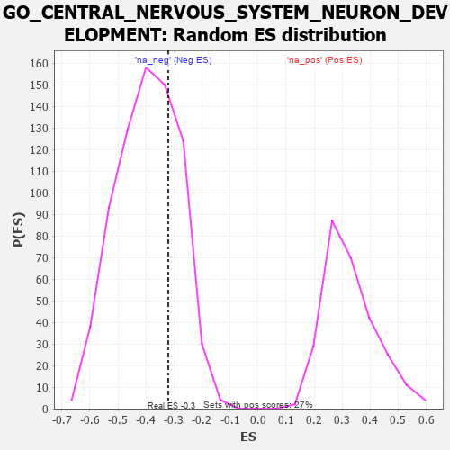

| | | Dataset | 7d |
| Phenotype | NoPhenotypeAvailable |
| Upregulated in class | na_neg |
| GeneSet | GO_CENTRAL_NERVOUS_SYSTEM_NEURON_DEVELOPMENT |
| Enrichment Score (ES) | -0.32025787 |
| Normalized Enrichment Score (NES) | -0.8120455 |
| Nominal p-value | 0.72465754 |
| FDR q-value | 0.9821622 |
| FWER p-Value | 1.0 |
Table: GSEA Results Summary

Fig 1: Enrichment plot: GO_CENTRAL_NERVOUS_SYSTEM_NEURON_DEVELOPMENT
Profile of the Running ES Score & Positions of GeneSet Members on the Rank Ordered List
| PROBE | GENE SYMBOL | GENE_TITLE | RANK IN GENE LIST | RANK METRIC SCORE | RUNNING ES | CORE ENRICHMENT | | 1 | DCLK1 | | | 55 | 2.532 | 0.2058 | No |
| 2 | ARX | | | 322 | 0.782 | 0.2380 | No |
| 3 | SLIT2 | | | 2724 | 0.195 | -0.0476 | No |
| 4 | NR2E1 | | | 2844 | 0.177 | -0.0477 | No |
| 5 | FGFR2 | | | 2895 | 0.167 | -0.0399 | No |
| 6 | MAP2 | | | 3074 | 0.140 | -0.0505 | No |
| 7 | CDK5 | | | 3480 | 0.080 | -0.0947 | No |
| 8 | ROBO2 | | | 4066 | -0.018 | -0.1668 | No |
| 9 | CRK | | | 4139 | -0.031 | -0.1732 | No |
| 10 | NTRK2 | | | 4543 | -0.104 | -0.2152 | No |
| 11 | DRD2 | | | 5088 | -0.221 | -0.2650 | No |
| 12 | PTEN | | | 5262 | -0.261 | -0.2648 | No |
| 13 | EPHA4 | | | 5273 | -0.265 | -0.2438 | No |
| 14 | SZT2 | | | 5882 | -0.429 | -0.2842 | Yes |
| 15 | UBB | | | 6090 | -0.503 | -0.2680 | Yes |
| 16 | GBA2 | | | 6136 | -0.515 | -0.2304 | Yes |
| 17 | FEZF2 | | | 6150 | -0.519 | -0.1884 | Yes |
| 18 | ROBO1 | | | 6577 | -0.699 | -0.1833 | Yes |
| 19 | NPY | | | 7465 | -1.356 | -0.1810 | Yes |
| 20 | DCLK2 | | | 7529 | -1.439 | -0.0680 | Yes |
| 21 | DCC | | | 7550 | -1.470 | 0.0529 | Yes |
Table: GSEA details [plain text format]

Fig 2: GO_CENTRAL_NERVOUS_SYSTEM_NEURON_DEVELOPMENT: Random ES distribution
Gene set null distribution of ES for GO_CENTRAL_NERVOUS_SYSTEM_NEURON_DEVELOPMENT